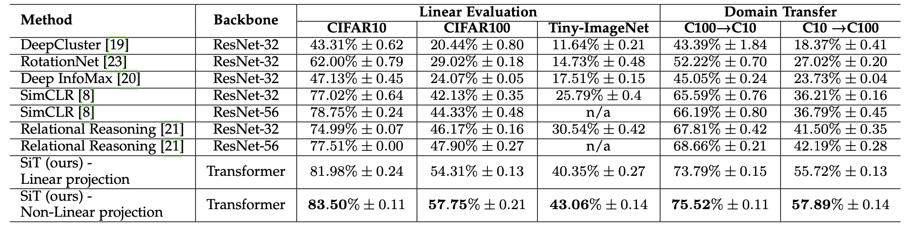

Neurocomputing
Vision Transformers
Vision transformer (ViT)
The transformer architecture can also be applied to computer vision, by splitting images into a sequence of small patches (16x16).
The sequence of patches can then be classified using the first output of the Transformer encoder (BERT) using supervised learning on Imagenet.
Vision transformer (ViT)
The Vision Transformer (ViT) outperforms state-of-the-art CNNs on Imagenet while requiring less computations (Flops), but only when pretrained on bigger datasets.
The performance is acceptable when trained on ImageNet (1M images), great when pre-trained on ImageNet-21k (14M images), and state-of-the-art when pre-trained on Google’s internal JFT-300M dataset (300M images).
Transfer learning on smaller datasets is also SotA.

Self-supervised Vision Transformer (SiT)
- Self-supervised learning is possible through from data augmentation, where various corruptions (masking, replacing, color distortion, blurring) are applied to the input image, but SiT must reconstruct the original image (denoising autoencoder, reconstruction loss).

An auxiliary rotation loss forces SiT to predict the orientation of the image (e.g. 30°).
An auxiliary contrastive loss ensures that high-level representations are different for different images.

Self-distillation with no labels (DINO)
Another approach for self-supervised learning has been proposed by Facebook AI using self-distillation.
The images are split into global and local patches at different scales.
Global patches contain label-related information (whole objects) while local patches contain finer details.